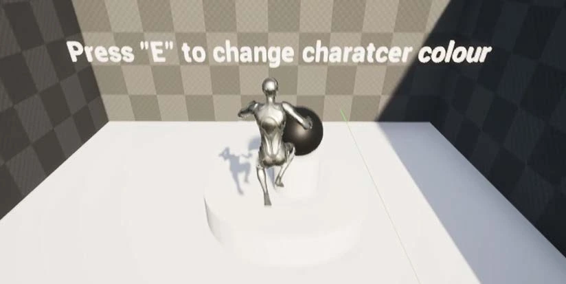

LIGHT AND SHADOW
Light and Shadow
Explore underground caves, switch between light and shadow, and redirect light with mirrors in this puzzle role-playing game.
- Tutorial + three levels
- Level sketches and scene blockouts
- Line Trace Blueprints and playtest reflections